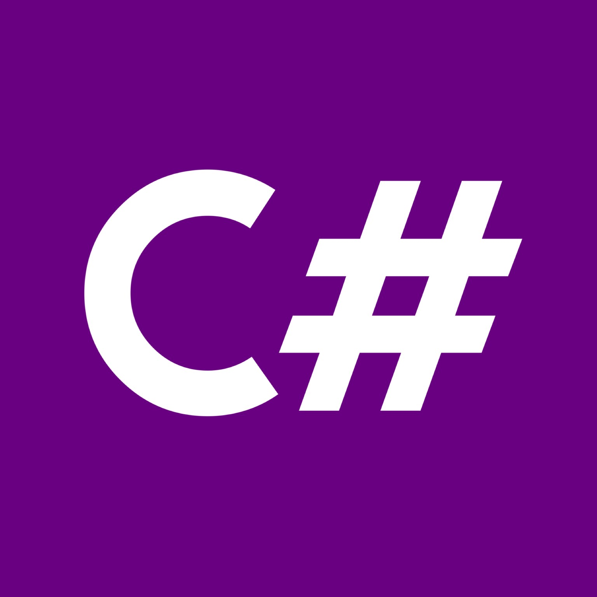

Quiz game on the TV series CHOUFLI HAL

In the first round, the player answers three multiple-choice questions related to
Tunisian television shows and culture.
The player needs to get at least two out of three answers correct to advance.
If the player qualifies, they proceed to a more challenging round with ten additional questions covering
Tunisian cultural topics.
SNAKE game

The snake moves in a specified direction (up, down, left, or right), adding a new segment at the head
and removing the tail unless it has eaten.
When food is consumed, the snake grows by keeping the tail intact,
with new food appearing at random grid locations.
The game checks if the snake goes out of bounds or collides with itself,
ending the game in either case.
Windows Forms application

The Student Management System is a Windows Forms application designed for managing student records .
It provides a user-friendly interface.
The GUI includes buttons,
text boxes, and a data grid view, allowing easy navigation through records , making
it accessible to users without technical expertise.
Predictive analysis of prices in Buenos Aires

Predictive analysis of prices in Buenos Aires aims to forecast future price trends, helping investors, buyers,
sellers, and agents make informed, data-driven decisions.
By using historical data and advanced models, this a
nalysis offers valuable insights that support strategic choices and enhance market understanding.